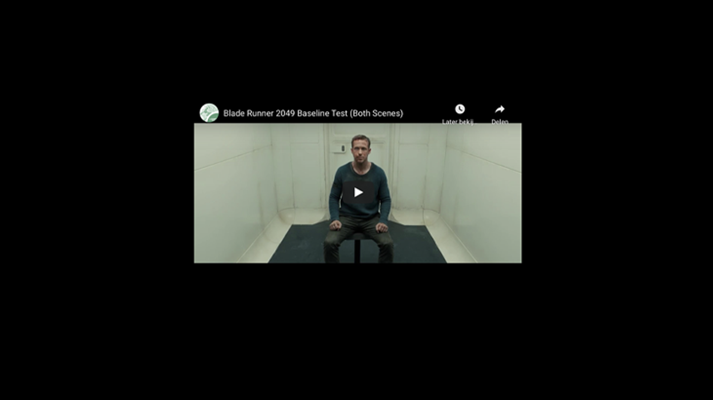

Voor het vak Web Typografie is ons de opdracht geven een fragment te ondertitelen voor iemand die doof is. Hierbij komt veel onderzoek te pas, maar na veel feedbacksessies met iemand die daarwerkelijk doof is, is dit het eindresultaat geworden:
Voor een link naar het fragment me de ondertiteling en visuele effecten, klik hier!